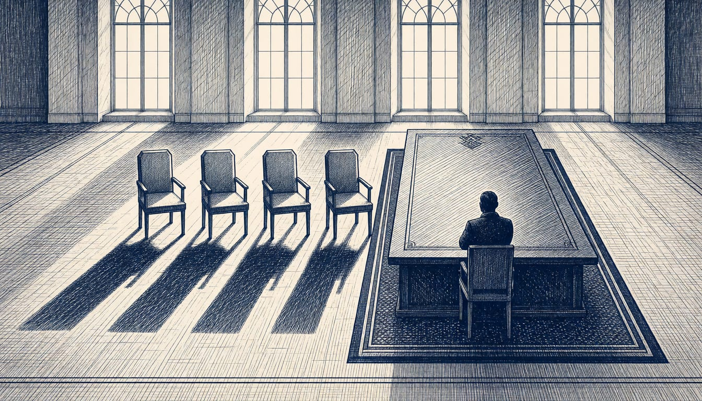

Larcher calls France's right and centre candidates to one table, raising pressure on Philippe
The Senate president wants a method to choose a single 2027 candidate. Philippe, best placed in the polls, has opposed a primary for months. BFMTV says polls show no right or centre candidate would reach the second round. France 24 reports voting intentions point to a possible Le Pen-Mélenchon duel.

Senate President Gérard Larcher has called the four right and centre candidates for 2027 to one table to agree a method for choosing a single candidacy. He wants Bruno Retailleau of Les Républicains, David Lisnard of Nouvelle Energie, Gabriel Attal of Renaissance and Horizons leader Edouard Philippe to meet, with himself presiding.
According to BFMTV, the polls indicate that none of the right and centre candidates would be able to reach the second round. France 24 reports that current voting intentions point instead to a possible duel between Marine Le Pen and Jean-Luc Mélenchon. A close associate of Larcher told AFP the candidates are all below 10 per cent and can no longer go on like this. The associate noted that Larcher, who is not a candidate, is the only one who talks to everyone.
Edouard Philippe, the best placed in the polls, has so far opposed a primary. This week, on Franceinfo, he said he is not a man to change his mind according to circumstances. He polls at around 13 per cent. On 7 November, at a public meeting in La Ciotat, he called the right and centre primary a division operation. He asked the worst-placed candidates to show responsibility by withdrawing by February.
Attal, Retailleau and Lisnard all three support a primary, and Le Monde reports that Philippe's rivals of the right and centre have been pushing for one in recent days. Larcher wants the meeting as soon as possible, as Le Monde reports. He wants the candidates early next year to choose the candidate who will present the project of alternance needed to redress the country. He did not use the word primary.
Larcher said he trusts the candidates' sense of state to reach an agreement, saying they share, in his view, a certain vision of France. People close to Philippe, Le Monde reports, call a primary a race to the bottom and say joining it at the last moment would mean recognising a problem of momentum.